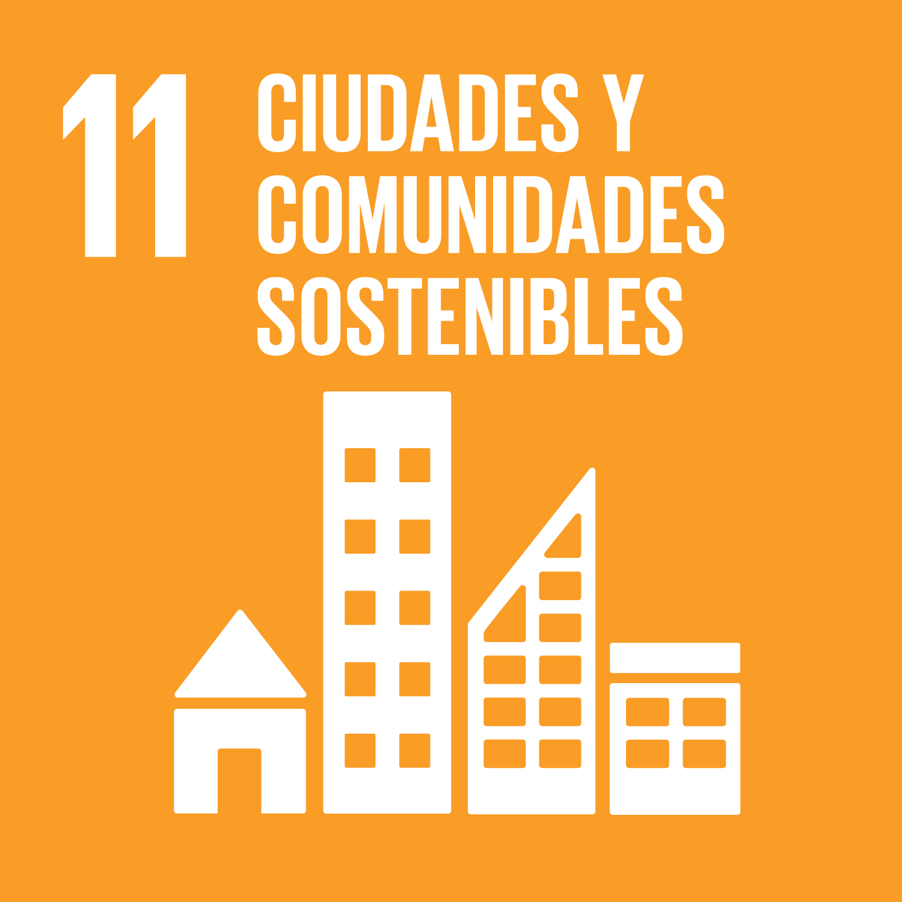
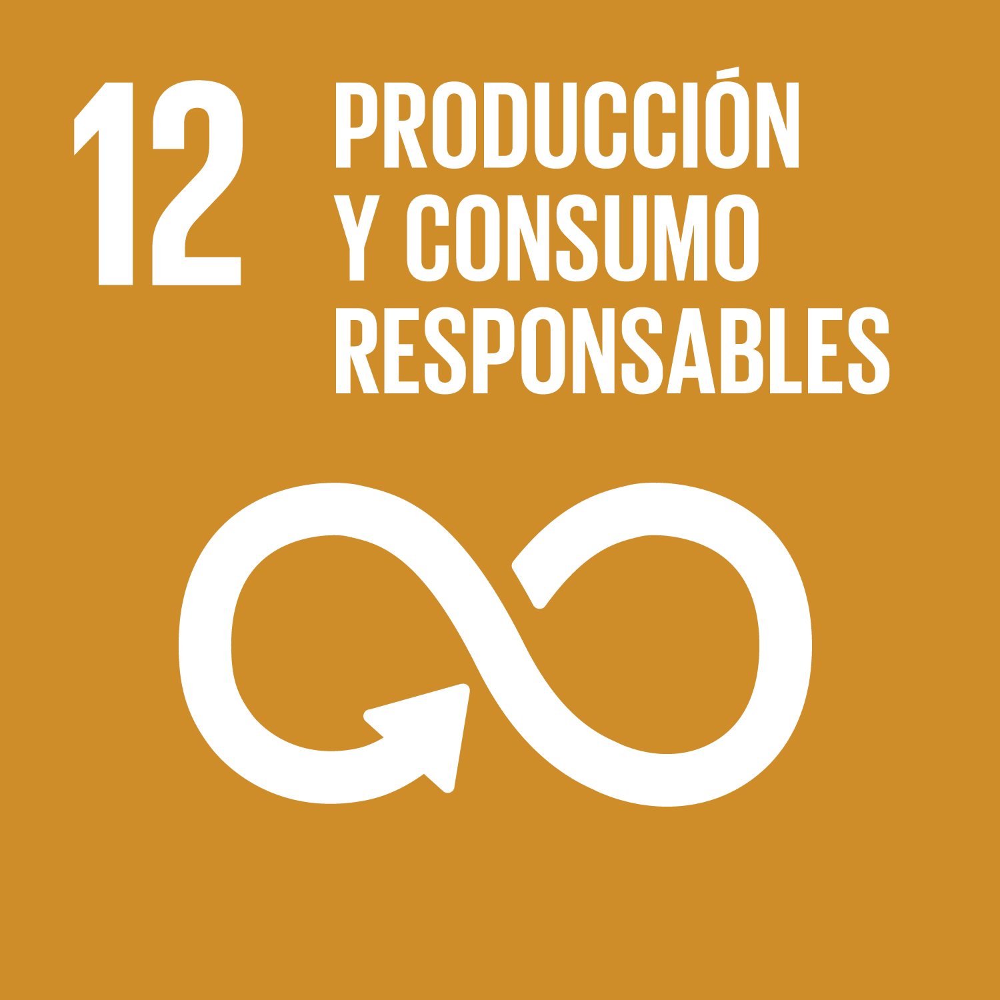

ODS 11 - Ciudades y Comunidades Sostenibles
Nuestro proyecto se enfoca en el ODS 11: Ciudades y Comunidades Sostenibles, a través de la implementación de contenedores de basura inteligentes que optimizan la recogida de residuos, reducen la contaminación y mejoran la eficiencia urbana.
Conoce más sobre el ODS 11
Nuestro proyecto a varios ODS para un futuro mas sosntenible

Hacer que las ciudades y los asentamientos humanos sean inclusivos, seguros,resilientes y sostenibles

Garantizar modalidades de consumo y produccion sostenibles

Adoptar medidas urgentes para combatir el cambio climático y sus efectos

Construir infraestructuras resilientes promover la industrialización inclusiva y sostenible y fomentar la innovacion

busca el contenedor más cercano,consulta su estado y contribuye a una ciudad mas limpia
Ir al buscador de contenedores